Note, the term stereogenic center is used analogously to chiral center.
1. The spatial orientation of the atoms of a molecule is called its what? A) constitution B) configuration C) handedness D) composition
2. An object that has no element of symmetry is called what? A) tetrahedral B) achiral C) symmetric D) asymmetric
3 Stereoisomers differ from each other in what respect? A) composition. B) constitution C) configuration D) steric hindrance
4 Which of the following must be true for an optically active compound? A) the molecular configuration is achiral B) the molecular configuration is chiral C) the compound is a racemic mixture of enantiomers D) the molecular configuration must have two or more stereogenic centers
5 Enantiomers are? A) stereoisomers having non-identical mirror image configurations B) stereoisomers that do not have non-identical mirror image configurations C) stereoisomers having a mirror plane of symmetry D) achiral stereoisomers
6 Which conformation of cyclohexane has a C3 axis of symmetry? A) boat B) twist boat C) chair D) envelope
7 The following compound has how many stereogenic centers?
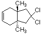
8 Hydration, by oxymercuation, of 3-methyl-1-butene gives 3-methyl-2-butanol. What is the observed rotation of this product, using a 20% solution in ethanol in a 1dm polarimeter cell?.Assume the specific roatation of the pure (S)-enantiomer to be +16º A) +3.2º B) -3.2º C) 180º (+ or -) D) 0º
9 Which of the following is (R)-3-hexanol?
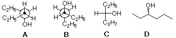
10 Which two Fischer formulas represent a pair of enantiomers?
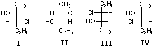
11 Consider the Fischer projection formula for (S)-2-chlorobutane Which of the following changes does not convert this structure to the (R)-enantiomer? A) rotation 180º in the plane of the paper (or screen) B) flipping the structure over (a 180º rotation out of the plane) C) exchanging the two vertical substituents (i.e. top and bottom) D) exchanging the two horizontal substituents (i.e. right and left)
12 Which of the following represents (E)-3,6-dichloro-6-methyl-3-heptene?
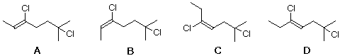
13 Designate the CIP priority order of the following C5H11- groups. (Lowest < Highest priority order) I CH3(CH2)4– II (CH3)3CCH2– III C3H7CH(CH3)– IV (CH3)2CHCH2CH2– A) I < II < III < IV B) IV < III < II < I C) I < IV < II < III D) III < II < IV < I
14 Which of the following compounds has two stereogenic centers (asymmetric carbons)?
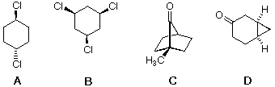
15 Which of the following compounds is (S)-4-chloro-1-methylcyclohexene?
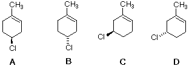
16 Which two of the following compounds represents a pair of enantiomers?
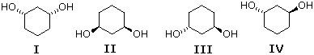
17 Which of the following is properly classified as a meso compound?
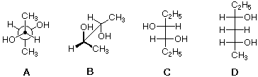
18 When HOBr adds to 4-methylcyclopentene, how many new stereogenic centers are formed? A) 1 B) 2 C) 3 D) 4
19 Which of the following isomeric dienes is chiral? A) 2,3-pentadiene B) 3-methyl-1,2-butadiene C) 2-methyl-1,3-butadiene D) none, all are achiral
20 Which two of the following compounds are diastereomers?
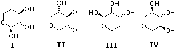
21 Two equivalents of bromine add to one equivalent of 1,7-octadiene. How many stereoisomeric tetrabromides will be formed? A) 1 B) 2 C) 3 D) 4
22 Two equivalents of OsO4 hydroxylate one equivalent of 1,5-cyclooctadiene. How many stereoisomeric cyclooctane-1,2,5,6-tetraols will be formed? A) 1 B) 2 C) 3 D) 4
23 The optically active bromohydrin (1R, 2R)-2-bromocyclohexanol reacts with base to produce cyclohexene oxide (C6H10O). Which of the following statements is true? A) a racemic product is formed B) the observed optical rotation changes sign C) the observed optical rotation does not change sign D) the product is achiral
24 Which of the following sugars has the configuration (2S, 3R, 4R)?
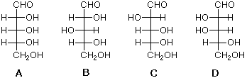
25 How many stereogenic carbon centers are there in morphine, structure shown below?
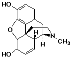
26 Pure (S)-2-butanol has a specific rotation of +13.52 degrees. You have made and purified a sample that has a calculated specific rotation of +6.76 degrees. What can you conclude about this sample? A) the sample has completely racemized B) 50% the sample has rearranged into a meso isomer C) 50% of the sample has racemized D) 75% of the sample has racemized
27 How many stereoisomers of (CH3)2CHCH=CHCH2CH(OH)CH2Br are possible? A) 2 B) 3 C) 4 D) 5
28 If two isomers have been classified correctly as epimers, they may also be called...? A) diastereomers B) enantiomers C) tautomers D) conformers
29
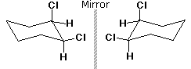
30 Which of the following statements must be true for two pure chiral isomers ? A) they must be enantiomers B) they must be diastereomers C) they must be stereoisomers D) they must be optically active
31 Which two of the following compounds are identical? A) I & II B) II & IV C) III & IV D) I & III
32
33 Which of the following statements is true for a pair of diastereomers? A) they will have identical physiological properties. B) they will have specific rotations of opposite sign. C) they will have identical chemical properties (e.g. reactivity) D) they will have different physical properties.
34 Which of the following descriptive terms would never be applied to a pair of stereoisomers ? A) enantiomers B) tautomers C) diastereomers D) epimers
35 What kind of reagent would be needed to resolve a racemic amine, such as 2-aminobutane ? A) the pure optically active amine to serve as a template for crystallization. B) an achiral carboxylic acid to give a racemic mixture of amine salts. C) an enantiomerically pure chiral carboxylic acid to give a diastereomeric mixture of amine salts. D) a racemic chiral carboxylic acid to give a complete mixture of isomeric amine salts.
36 What common symmetry elements if any are found in the stable chair conformer of trans-1,4-dichlorocyclohexane? A) a single mirror plane and a C2 rotational axis. B) a C3 rotational axis but no mirror plane. C) two orthogonal mirror planes and a C2 rotational axis. D) a single C2 rotational axis but no mirror plane.
37 What common symmetry elements if any are found in the stable chair conformer of trans-1,2-dichlorocyclohexane? A) a single mirror plane and a C2 rotational axis. B) a single mirror plane and a C3 rotational axis. C) two orthogonal mirror planes and a C2 rotational axis. D) a single C2 rotational axis but no mirror plane.
38 Reaction of 3-methyl-1,4-cycloheptadiene with excess perbenzoic acid (C6H5CO3H) forms a diepoxide product. How many stereoisomers, counting enantiomers, are expected from this reaction ? A) 4 (two pairs of enantiomers) B) 4 (two meso compounds and a pair of enantiomers) C) 5 (two pairs of enantiomers and a meso compound) D) 6 (two pairs of enantiomers and two meso compounds)
39 The antimalarial alkaloid quinine, C20H24N2O2, is optically active. An ethanol solution of 8g quinine in 100mL displays a rotation of -13.6º in a 1dm polarimeter tube. What is the specific rotation of quinine? A) -85º B) -170º C) -43º D) -26º
40 A C7H14O optically active alcohol is oxidized by Jones' reagent to an optically inactive (achiral) ketone. Which of the following compounds meets these facts?
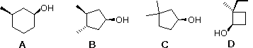
41 Which of the following compounds has a prochiral methylene group (i.e. the hydrogen atoms are diastereotopic)? A) propane , CH3CH2CH3 B) cyclopropane , (CH2)3 C) 2-methylpropene , CH2=C(CH3)2 D) ethanol , CH3CH2OH
42 The thermal electrocyclic closure of (2E,4Z,6E)-2,4,6-octatriene gives which of the following? A) cis-5,6-dimethyl-1,3-cyclohexadiene B) trans-5,6-dimethyl-1,3-cyclohexadiene C) cis-3,6-dimethyl-1,4-cyclohexadiene D) cis-3,6-dimethyl-1,4-cyclohexadiene
43 The Cope rearrangement, [3,3]-sigmatropic shift, of meso-3,4-dimethyl-1,5-hexadiene gives which of the following? A) 1,7-octadiene B) (2Z,6Z)-2,6-octadiene C) (2E,6Z)-2,6-octadiene D) (2E,6E)-2,6-octadiene
44 Which is the expected product from the following Diels-Alder reaction?
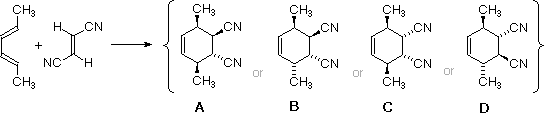
45 Which of the following structures represents a chiral compound?
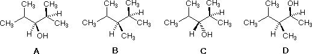
46 Which of the following compounds has a S configuration?
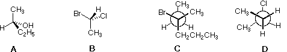
47 How should the following structure of polypropylene be classified?
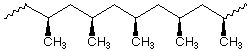
48 Which of the following C8H16 isomers is thermodynamically most stable?
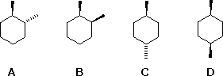
49 Which of the following statements is not an essential feature of an optically active compound? A) the molecules of an optically active compound will be dissymetric or asymmetric. B) the molecules of an optically active molecule must have at least one stereogenic site. C) an optically active compound's molecular configuration will not be identical with its mirror image. D) an optically active compound will have at least one stereoisomer.
50 Which of the following statements is not correct? A) a pair of enantiomeric compounds will have the same melting point. B) a pair of enantiomeric compounds will have the same solubility in ethanol. C) a pair of enantiomeric compounds will have exactly the same functional groups. D) a pair of enantiomeric compounds will have identical optical rotations.
51 Which of the structures on the right, if any, represents syndiotactic polyacrylonitrile?
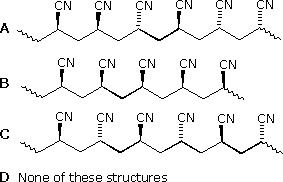
52 Examine the compound on the right. How many stereoisomers having this constitution are possible?
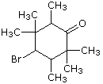
53 Which of the following is (2R, 3S)-2,3-pentanediol?
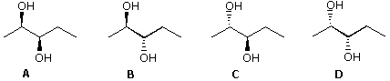